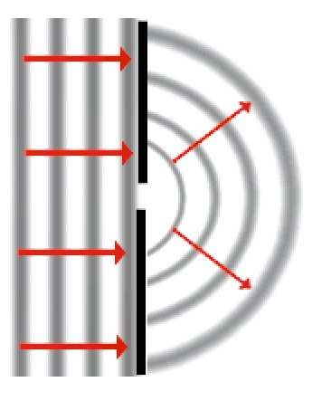

Unde mecanice
C.10. |
|
*Difracţia undelor mecanice |
 Provocarea 1C10−1
Provocarea 1C10−1
O undă plană se propagă către un paravan în care este practicată o deschidere (figura 1C10−1).
|
Fig. 1C10-1. O undă plană se propagă către deschiderea dintr−un paravan.
|
Cum te aştepţi să se propage unda după ce trece prin deschidere?
Conform principiului lui Huygens, particulele mediului aflate în zona deschiderii devind surse secundare, de la care se propagă unde în toate direcţiile.
Dacă deschiderea este de mici dimensiuni, comparabile cu lungimea de undă, undele secundare provenite din interiorul deschiderii sunt practic în fază,
astfel că frontul de undă care rezultă este aproape semicircular (figura 1C10−2).
|  |
Fig. 1C10-2. După ce unda trece printr−o deschidere mica, frontul de undă devine aproape semicircular.
|
Figura 1C10−3 prezintă fotografia undelor de pe suprafaţa apei care trec printr−o deschidere de mici dimensiuni.

Fig. 1C10-3. Fotografia undelor pe suprafaţa apei care trec printr−o deschidere mică.
Acest fenomen a fost punctul de plecare în formularea, de către Huygens, a principiului care permite înţelegerea propagării undelor.
 Numim difracţie fenomenul de propagare a undelor şi în spatele obstacolelor pe care le întâlnesc în mediul de propagare.
Numim difracţie fenomenul de propagare a undelor şi în spatele obstacolelor pe care le întâlnesc în mediul de propagare.
Provocarea 1C10−2
Cum te aştepţi să se propage o undă prin deschiderea dintr−un paravan, dacă lărgimea acestei deschideri este mult mai mare decât lungmimea de
undă?
Lărgimea deschiderii fiind mult mai mare decât lungimea de undă, în dreptul deschiderii se vor reface fronturi plane de undă (ca la propagarea undei
plane).
Efectul difracţiei este mai puţin pregnant şi se manifestă doar în "flancurile" fronturilor plane (figura 1C10−4).
|
Fig. 1C10-4. Difracţia printr−o deschidere a cărei lărgime este de 7 ori mai mare decât lungimea de undă.
|
Provocarea 1C10−3
Te aştepţi ca tulpinile plantelor din figura 1C10−5 să reprezinte un obstacol pentru propagarea undelor pe suprafaţa apei?
Fig. 1C10-5. Tulpini care "străpung" suprafaţa apei.
Când o undă întâlneşte un obstacol, unda pătrunde prin difracţie şi în spatele "flancurilor" acestuia.
Dacă dimensiunile obstacolului sunt mici (comparabile cu lungimea de undă), undele secundare din flancurile acestuia sunt aproape în fază, interferă
constructiv şi refac frontul de undă, (aproape) ca şi când obstacolul nu ar exista!
Dacă dimensiunile obstacolului sunt mult mai mari decât lungimea de undă, undele secundare din flancurile acestuia se atenuează aproape complet înainte de
a interfera.
Astfel, amplitudinea undei în spatele obstacolului scade considerabil − un obstacol de mari dimensiuni este într−adevăr un obstacol pentru
unde (figura 1C10−6).
Fig. 1C10-6. Un obstacol de mari dimensiuni nu mai permite refacerea undei.
Difracţia este mai pronunţată pe deschideri şi obstacole de mici dimensiuni (comparabile cu lungimea de undă).
Efectele difracţiei pot fi neglijate în cazul deschiderilor şi obstacolelor care au dimensiuni mult mai mari decât lungimea de undă.